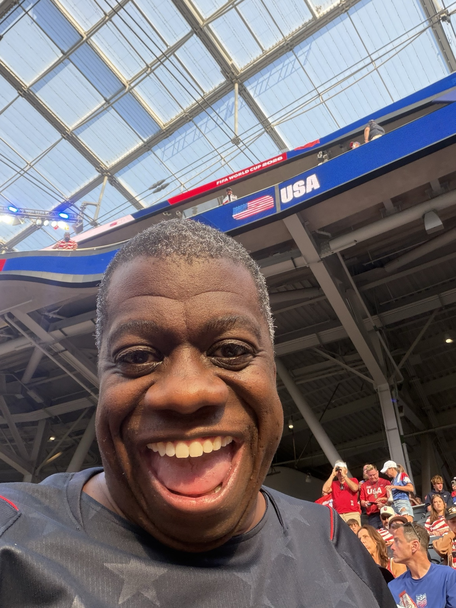

A World Cup
at home, together.
This started as a guide for the people I love: which games, which watch parties, how to find each other. The tournament is over now, so this is what the site became: the record of the best soccer summer of my life. Same World Cup the whole country watched. Made smaller, and warmer, by who was around the table.
Every page updated August 1 with what actually happened, verified scores and real photos and the texts we really sent. Start with The Run, then meet The Friends.
G
SoFi Stadium · photo Troutfarm27 · CC BY-SA 4.0 · Wikimedia Commons
What the summer held. All of it true.
USA 4-1 Paraguay. USA 2-0 Australia. Türkiye 3-2 over a rotated side that had already won Group D. USA 2-0 Bosnia with ten men, our first knockout win since 2002. Belgium 4-1, and the whistle in Seattle. Then Spain won the whole thing at MetLife, 1-0 over Argentina in extra time, twenty miles from the table where I sat with my people. The biggest World Cup ever played, 6.8 million in the stands, and two of those seats, on two different nights, were mine.
The two sentences I keep
"Not me crying in an uber on the way to a soccer game." Sent to six friends on June 25, on the way to sit next to Pete Hines at a home World Cup, fifty years into loving this sport.
"Maybe the World Cup was the friends we made along the way." Sent minutes after elimination on July 6, and truer every day since. It became a whole page.
Deep dives.
Every page below was written during the tournament and updated after it, with the original reads kept as artifacts and graded honestly. That's the house style: we say what we believed, then we say what happened.
Which game were you on?
Each match had its night, and every night had rooms: stadium seats, bars, couches, one Dragon House. Tap any match for what it became. If you were in one of these rooms, that card is partly yours.
M01
USA 4, Paraguay 1 · The Opener · Quinn's Match
At the match: Quinn · With G in WeHo: the whole group thread
What it became
A rout, and a christening. Pulisic split two defenders to force the early own goal, Balogun hit a brace, the first American to score twice in a World Cup match since 1930, and Gio Reyna toe-flicked the fourth at 90'+8. Paraguay pulled one back at 73'. Quinn was inside SoFi for all of it, sixteen years of our US Soccer chapters walking into a home opener. I watched from West Hollywood as planned and texted Pete a photo of the second Balogun goal at 9:09pm. Full chapter on The Run.
M02
USA 2, Australia 0 · Group D clinched
At the match: Mike Morrow · G watching from LA
What it became
A surprise 3-5-2, a Burgess own goal, a Freeman header, and a clean, professional afternoon without the injured Pulisic. Knockouts clinched with a game to spare. Mike Morrow was in the building, in his own city, thirty-two years after we sat at the 1994 draw in Vegas together. His verdict at full time: "Scrappy. US deserved the win but they will have trouble getting to 16." Chapter on The Run.
M03
USA 2, Türkiye 3 · Pete Brought Me · The day of a lifetime
At the match: Gordon + Pete · Quinn in the building · Names on the videoboard

What it became
The night of my soccer life. Pete Hines transferred me the ticket on June 7 and texted "What time you heading this way to GO TO THE WORLD CUP?!?!" I cried in the uber and told six friends so. Trusty scored off a corner at 3', Güler and Yılmaz answered, Berhalter leveled at 49', and Ayhan won it for Türkiye with the last touch at 90'+8 against our heavily rotated side. The group was already ours, the seeding didn't move, and at some point the videoboard put GORDON BELLAMY and PETE HINES up with the Super Supporters. Quinn drove up from San Diego and was in the building too. Scoreboard: lost. Night: undefeated. Full chapter with both photos on The Run.
R32
USA 2, Bosnia 0 · Ten men, one history · Wiscago
With G: Eric & Crystal + James + Henry + Oscar
What it became
The first US men's knockout win since 2002. Only the second ever. Balogun scored at the stroke of halftime and was sent off at 61', first player to score and see red in a World Cup knockout game since Zidane in the 2006 final. Ten men held for half an hour, then Tillman bent in a free kick at 82'. We watched from the Dragon House with the Francksens, in a Norwegian-flagged Wisconsin town mid-soccer-fever. Days later FIFA suspended Balogun's ban, Belgium's protest failed, and I forwarded the news to eighty friends in an hour. The whole saga is on R32 and The Run.
R16
Belgium 4, USA 1 · The whistle · And the sentence that named a page
With G: the Francksens + the group threads of my whole life
What it became
Tillman's second free kick of the tournament tied it at 31' and for 61 seconds we believed. Then Belgium scored off the restart and the day went the way Mike warned us it might. Pulisic limped off after a boot to the foot. Matt Kramer had opened the day with "MATCHDAY!!!" and after the whistle I typed the truest thing I wrote all summer: "Maybe the World Cup was the friends we made along the way." For the record: Belgium then pushed champions Spain harder than anyone, 2-1 in the quarterfinal. The full report is on R16, and the sentence became The Friends.
Two days earlier, July 4 at the Dragon House happened in all its glory, and no, I am still not telling you what Eric served. House law.
QF-SF
The rounds we watched as fans of the game
G: LA, then packing for NYC
What they became
Norway had already stunned Brazil 2-0. England survived Norway in extra time on two Bellingham goals, then lost a heartbreaker to Argentina in Atlanta. Spain beat Belgium 2-1 and France 2-0 and looked like what they turned out to be. The bracket page's May prediction that Spain's lane fed our quarterfinal aged extremely well, which is cold comfort of the highest quality. Details on The Run.
FINAL
Spain 1, Argentina 0 · Foster's birthday weekend · NYC
The week: Foster's 55th · Fanatics Fan Fest · the bronze-game churrasco · the crew

What it became
The trip delivered everything it promised. Foster's 55th birthday on the 18th, Brazilian churrasco while England and France played a 6-4 bronze game for the ages, Fan Fest days at the Javits with Brennan and the crew, and then the Final itself: Spain 1, Argentina 0, extra time, Ferran Torres in the 106th, 80,663 at MetLife, the biggest World Cup ever played ending twenty miles from our table. And the receipt I treasure most: on the loudest sports day of the year, the only text I sent was about the venue for Dane's wedding, which I officiated six days later. The Cup ended. The life it threads through kept going.
The signal.
The rules that ran this site during the tournament turned out to be the point of it.
1. The people who love me through this
Joe and Brennan are not soccer people. They showed up all summer anyway: Brennan at the soccer bar and the Final table, Joe holding the home front through a two-month fandom bender. If you saw them in any room with me, they were there because they love me. That was always the whole sentence.
2. Everything real, everything receipted
This was the World Cup of AI fakes and manufactured highlights. So this site went the other way: every photo from our phones with its date, every quote a real message, every score verified against the record, and every "I was there" backed by a ticket. Where we don't have a receipt, we say so. That discipline is why you can trust the joy.
3. Share it
This site is meant to be sent around. Every match chapter and every friend chapter has its own link, so you can text one exact memory to one exact person. If someone you love was part of this summer, send them their moment. The whole point was to make the biggest tournament on earth feel small and warm at scale.
One more time, with feeling.
Corrections, additions, photos I don't have, memories I got wrong: text me at 818-472-7283 or email below, cc Darby, and the record improves. This is a living archive now.
Send me a memory